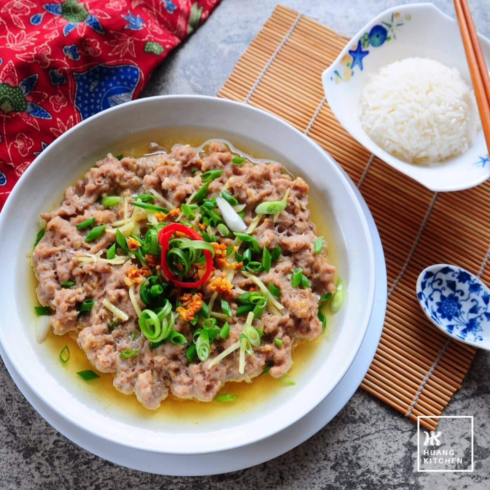

Steamed Chicken

Description
A very healthy high protein chicken recipe. No high-heat method cooking is used for this recipe. This is a must try
for people who want to try to avoid carcinogenic compounds. It's also suitable for people who like to meal prep,
easy storage in the fridge and easy to reheat with just microwave.
Ingredients
- 1kg chicken breast
- 1 bulb garlic
- 2 tablespoon salt
- 3 tablespoon mushroom stock powder
- 3 tablespoon white pepper
- 4 scallions
Steps
- Peel the garlic
-
- If you have a meat chopper, throw everything in there except the scallions.
- Otherwise mince the garlic and the meat until it becomes fine grind, then throw the seasoning.
- Put the chopped ingredients into a bowl.
- Heat up a steamer until it boils.
- Place the bowl above the steamer, and cook it for 25 minutes.
- Sprinkle the chopped scallions on top of the meat, and cook for another 5 minutes.
- Enjoy!
Home